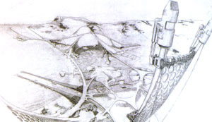
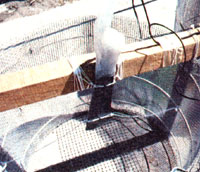
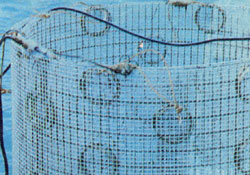
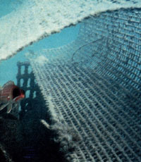
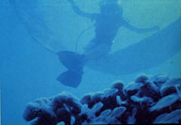
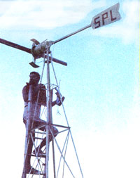
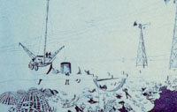
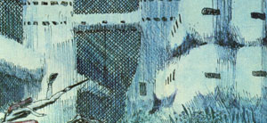
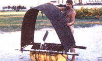

Not only that . . . but the "homegrown" constructions will be strong and durable, and-should they ever fracture-the same process that built them will enable them to heal themselves.
Furthermore, the concept behind this breakthrough is so basic . . . so sensible . . . and so absurdly simple that you'll wonder why no one ever thought of it before, and-more puzzling still-why so many people who have learned about the new building method don't rush out to try it.
Partly to blame for the lack of public acceptance, perhaps, is Wolf Hilbertz- the originator of the concept-who detailed his basic theory in a technical journal in 1975. The professor hoped-in that way-to assure that the process could not be patented and commercially exploited by anyone else ... since he felt the idea should belong to the whole world.
Hilbertz studied architecture in Berlin, finished his training at the University of Michigan, and now teaches the subject at the University of Texas in Austin. It was in the early 1970's, that the professor turned his attention to the study of plans that were-at that time-being proposed for underwater buildings.
"They were preposterous," he recalls, "because each and every one of the designs involved conventional, land-based techniques and materials . . . but when you're dealing with a new environment, you have to consider new ideas."
So, doing what he today urges his students to do, Wolf took a different approach . . . and looked at how some marine creatures provide themselves with habitats.
"I saw that such creatures grow their shelters from the material closest at hand: the minerals suspended in the water all around them. 'Why,' I wondered, 'can't humans emulate coral?' "
The thought was enough to trigger Wolf's memory. He recalled that just after World War I, Germany-stuck with massive reparations bills-had tried to extract gold from the Baltic Sea by electrolysis. The idea wasn't all that farfetched, since every known element can be found to some degree in seawater. Among the elements, of course, is gold, but-as the German researchers soon discovered-the precious metal exists in seawater in such small quantities that the extraction process costs more than conventional mining methods. Needless to say, the project was abandoned.
Why not, the architect wondered, repeat the German experiment, but make a cathode of wire mesh material or hardware cloth? Why not shape such "fencing" like the finished building you want . . . and let electricity attract the minerals to the form?
To find out whether his idea was practical, Hilbertz invested in a pair of second-hand commercial garage battery chargers, some cable, and enough wire mesh fencing to begin his first experiments (which were conducted at the University of Texas Marine Science Institute on the Gulf of Mexico, and at the U.T. Marine Research Station on St. Croix in the Virgin Islands). The rest is history ... but, surprisingly, it's little-known history.
Just as Wolf expected, minerals from the seawater (mainly calcium carbonate compounds) began to cling to the cathodes. At first, the accumulation made the metal mesh look as if it had been dipped in molten glass. As it thickened, the coating began to resemble sprayed asbestos flocking, and then-when the interstices finally closed-sprayed concrete. Even after the material was quite thick, the mineral accretion continued . . . until the electric current was switched off.
Samples of the limestone-like substance were taken back to Austin, where tests revealed that the material was able to withstand pressures of more than 4,000 pounds per square inch, and was thus structurally stronger than the concrete normally used for driveway slabs and stairs. Yet the material was lighter in weight than is concrete, and-though the samples appeared porous-they didn't weaken as they dried.
Here's another interesting fact: So little electricity had to be trickled through the circuit-a maximum of 50 amps at 12 volts-that Wolf and two student assistants were able to swim through the electric field without feeling even a tingle. And the fish and other sea creatures-far from being repelled-seemed at times to actually be attracted to the field.
By 1975, when Professor Hilbertz published the first results of his experiments, he had discovered that both the growth rate and the strength of the material could be regulated by adjusting the spacing of the anodes and cathodes and varying the density of the current. He also found that large structures would be stronger if allowed to grow slowly . . . perhaps over as much as a year's time.
In addition, Wolf was able to determine how much electricity to use in different situations, and the effect of water temperature as on structural growth. He also found out that-once the current was switched off-barnacles and other sea creatures were still attracted to the forms and continued to add to the strength of the grown structures.
The professor has tried to "raise" buildings in fresh water-some of it mineral rich and some not-but he found that in such an environment the mineral accretion was too slow and sometimes uneven. Seawater has proved to be a much better electrolyte, since the ocean-grown material is always strong and durable.
Once the concept was shown to be valid, Wolf and his team began to think of structures that might be practical to grow underwater. Why not ships' hulls? Why not beach houses that could simply be hoisted on shore once they were complete? Why not "forests" of components for land-based modular and prefabricated buildings?
Power for the first experiments was provided by the trickle charger, but Hilbertz was soon using small set on a reef above the growing structuresthat were capable of generating 60 to 200 watts in normal winds .. . more than enough electricity to produce even large buildings.
The simple wind generators cost $600 each, but our construction pioneer says that they could easily be duplicated by anyone handy with tools (using all new parts) for about $350 . . . and for a lot less cash if secondhand automobile alternators were used to generate the current.
An early Hilbertz-grown reef-set at the entrance to the Corpus Christi harbor-is holding up well . . . and so is another that shields an inlet at St. Croix. At present, as a matter of routine, Wolf also grows large panels (about an inch thick, uniform in density, and considerably stronger than reinforced concrete of the same thick ness) that are suitable for permanent, nonload-bearing walls. And he grows them in mere weeks . . . not months.
Furthermore, several of the latest suggested uses for Wolf's process are enough to boggle the mind. There's a possibility that his method may be employed to create sea anchors for the giant turbines a New Orleans group wants to place in deep water to tap the Gulf Stream for electricity, and he's talked to Puerto Ricans about forming an Ocean Thermal Energy Converter (OTEC) power plant by cutting a diagonal gully into the face of a deep-water cliff, then growing a shell over it . . . which should be easier to engineer than the huge pipe which would otherwise be necessary, and would not have to be moved into place.
The supply of raw materials for growing such structures is-unlike many resources-very abundant. It's been estimated that if the 60 quadrillion tons of minerals already in the seas (which cover more than 70°/a of the globe) could be extracted all at once and brought ashore, they'd form a crust-over the entire land mass-450 feet thick. In addition, the world's rivers and streams dump another three billion tons of fresh minerals into the oceans each year.
And here's a side benefit to Professor Hilbertz's building method: Early in his experiments the architect noted that-throughout the growth process-pure hydrogen gas bubbled up from the cathodes. Small-scale experiments suggest that it might be possible to collect the gas (which is a very versatile fuel), so that it could be tanked and piped ashore. (Since the sole by-product of burning hydrogen is pure water, many scientists see it as an important power source for the future.)
Last summer the professor grew his biggest structure so far: a tight cluster of cylinders of various heights (the tallest is 30 feet), which are permanently anchored underwater off St. Croix. The configuration had to be conceived as-and must be called-an abstract work of art, however ... a monument rather than an architectural engineering experiment because, when no one else would pay for the project, Wolf turned to the National Endowment for the Arts for financing. Actually, the structure probably is a fitting monument . . . to our civilization's resistance to new ideas.
In Wolf Hilbertz's case, though, such resistance seems to be finally crumbling. Early last summer, after several patrons had taken up his projects and let them down with a thud, Wolf finally concluded that he'd have to sell what he'd been trying-so unsuccessfully-to give away. He discovered that publishing his ideas hadn't made them public property, so-after applying for patents-he incorporated as the Marine Resources Company and soon found a group of Texas businessmen who were willing to back him.
Besides getting a chance to gather data more rapidly, the architect is now able to travel around the world and discuss ideas with people who are in positions to provide him with valuable feedback. He's just returned from Germany, where a consortium is being formed to commercialize underwater building growing. He's also convinced New York University to duplicate his experiments in Long Island Sound, to collect yet more data.
The invested money has allowed Wolf to broaden the base of his experiments, too. Observing his own underwater construction, he began to contemplate more conventional below-the-ocean structures . . . those made of reinforced concrete in particular.
Traditionally, such creations have steel "bracing", which often corrodes. When that happens, gases are given off that compress inside the structures and cause them to fracture. Wolf wondered what would happen if the steel were electrified. To find out, he built several experimental reinforced concrete pilings and subjected them to sufficient compression to cause fractures and to expose the reinforcing. Then he placed the pilings underwater, and allowed the steel to begin to rust.
Predictably, the gases did accumulate and the concrete cracked farther. After the damage became critical, Wolf connected his wires, turned on the current, and allowed electrolysis to "heal" the fractures with accretion. When the professor again subjected the pilings to compression, he found that they were actually stronger than they'd been at the outset. Such research suggests an inexpensive, efficient way to strengthen the bridge supports that cross many of our world's bays and harbors. The same process can also be used to "plate" the wooden or steel pilings of piers and other marine structures . . . such as oil rigs.
The oceanographer Athelstan Spilhaus, long an enthusiastic Wolf Hilbertz booster, believes that such repairing and reinforcing work alone-though unspectacular-could become the backbone of Wolf's new business ... and that the process that began as a sideline could earn millions!
But even though the professor's operation is rapidly moving into a "big business" classification, Wolf says he'll be happy to share his knowledge and experience with MOTHER's readers. And here's how he suggests you find out exactly how the process works.
Start with a small saltwater aquarium, a flashlight's 1.5-volt "D" cell, some short lengths of insulated copper wire, an iron nail, and a few square inches of 1/8-inch ferrous hardware cloth. Solder the end of one wire to the mesh and the other tip to the flat, negative terminal of the battery. (Try to keep the wire from being directly exposed to the saltwater electrolyte . . . where it must be submerged, protect it with wax, tar, or epoxy.) Then solder another wire between the "plus" tip of the battery and the nail. Drape the wires over the side of the aquarium ... space the anode (nail) and the cathode (mesh) about six inches apart . . . fill the aquarium with salt water. . . and forget it.
In a few days, you'll begin to notice the accretion of minerals on the mesh, and-in a few weeks-the holes will be completely filled in.
To grow a full-size structure efficiently, you'll have to do a lot of experimenting, but Professor Hilbertz is willing to save you some time by sharing the useful data he's accumulated about distances between poles, thicknesses of cathode materials, water temperatures, electrical intensities, and so on.
All you have to do to get the information is send a check or money order for $5.00 . . . to cover the costs of copying and mailing the material. The address: Wolf Hilbertz, School of Architecture, University of Texas, Austin, Texas 78712.
In return-as your structures grow-Wolf will ask that you keep in touch with him. He'd like to add what you learn to his information store. That way-if a number of folks work together-we might be able to improve upon old-fashioned building methods ... using techniques that the corals have been employing for years!.
|
 |
 |
 |
|
 |
 |
 |
|
 |
 |
 |